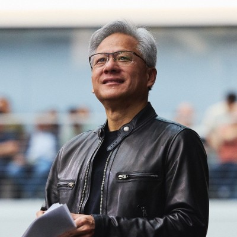

In 1993, I founded NVIDIA with Chris Malachowsky and Curtis Priem to solve the problem of 3D graphics for the PC. Our pioneering work in accelerated computing led to the redefinition of modern computer graphics and the creation of modern AI.
Now, we are fundamentally changing how computing works and what computers can do. The next industrial revolution has begun. NVIDIA has more than 32,000 people. We are strong and growing. We are consistently recognized as one of the “Best Places to Work” by Glassdoor, one of the “100 Best Companies to Work For” by Fortune magazine, a “TIME100 Most Influential Company,” the “Most Innovative Company of 2024” by Fast Company, and many more. We’re hiring, with openings in every corner of our company—and we are looking for talented, driven, and adventurous people who want to tackle challenges no one else can solve.
NVIDIA employees build technology that moves humanity forward and support the communities in which they work and live. Recognized as a top company in social responsibility, our employees are passionate donors to hundreds of charities around the globe. Go to careers.nvidia.com to take the first step. I look forward to building the future together.